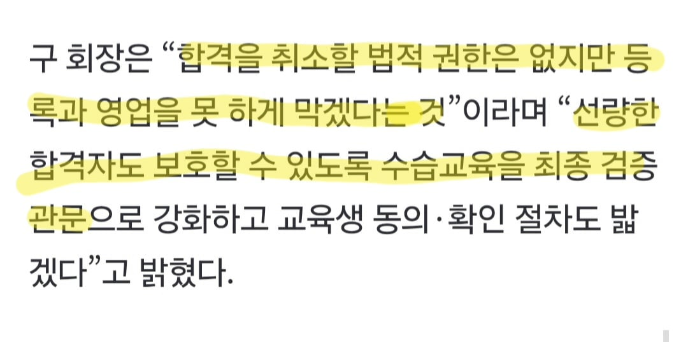

확실히 밥그릇 관련해서는 시원시원하게 일 잘하네

확실히 밥그릇 관련해서는 시원시원하게 일 잘하네
선량한 합격자들도 ㅈ같긴 하겟다 ㅋㅋ 문신충마냥 증명하면서 살아야하는 신세가 됨
열받은게 아니고 기회인거.
변호사시험 합격률 제한하는 것처럼, 공급제한 수단 하나 확보하는거지.
2차 붙으면 저거 그냥 할만한거 아님? 뭐 세무사 합격할정도면 내공이 있겠지 괜히 전문직임?
어떤 과목에서 원래 90점 넘는 사람이 한두명인 시험인데 이번에 60명 넘게나왔다나 그래서 그럴껄?
로또도 20명 넘으면 주작이라고 하는 나란데 60 명이면 ㅋㅋ
24년부터 현재 전수조사해야지
역시 말도 안되는 규제는 말도 안되는 일이 일어났을 때 날치기로 통과시키는 게 맞긴해
세무사라는 직업의 아성이 바로 깨지지는 않겠지만 60점 사람 세무사 vs 100점 AI 구도가 폭력적이긴 하지.
동네 잡 자격증도 아니고 인생갈아서 딸까말까한 전문직이 따였다는게 굉장히 상징성이 크다고 봄.
AI가 발전하면서 언젠가 이런 날이 오리라고는 생각했지만 그게 이렇게 빨리 올줄은 몰랐지.
그런데 지들이 뭔데 등록을 못하게 막아? 그게 법적으로 허용되는 거임?
변호사도 변호사회 승인 안나면 등록못함
분하면 소송하면 되지 뭐ㅋㅋ
세무사협회도 변호사협회랑 똑같은 공무수탁사인이야 등록,징계권 다 있음
현직이다
산송장 새끼들 일좀 하는구나
근데 찐합격자면 통과 못할거 아니긴 한데, 치팅이랑 공부가 병행된새끼 잡아낸건 어렵지 싶다
못잡아낸다 = 능력이 되는 놈이다
비용이 더 들어서 그렇지 문제 될 건 없지
뭔소리야이건 능력있는 치팅한놈은 문제없다는거임?
협회입장에서는 능력 없는 놈이 합격한게 심각한 문제인거지
애초에 능력검증을 1차로 필기로 대체하는건데
정식으로 통과했는데 능력이 안 되는 새끼
vs
치팅을 했는데 능력은 되는 새끼
능력과 윤리 둘 다 필수적인 문제인데
어차피 윤리는 잡기 힘들어
쟤들 스탠스도 능력검증이지
시험지 찾아서 검토하겠다는 내용은 없다
한끗차이로 장수생 되는게 한둘이어야지 원..
이미 여러명 봤음...
당연한 이야기지만 청각장애의 경우는 상관없겠지?
어림없지 실시간 대화생성도 가능한데
결국은 이렇게 갈 겁니다. AI 때문에 미리 준비하는 시험들은 신뢰도가 바닥으로 갈거에요. 실시간 검증으로 갈거라고 봅니다.
과락 간신히 면해서 합격한 사람들은 긴장되겠네
어차피 집체교육 다 족보 도는 거고 공부할 시간에 연습도 할 시간도 줌
과락 통과할 정도면 충분히 함
하긴 시험 애매하게 떨어진 사람은 구제해도 완전 되도 않는 점수나온 사람은 판단 가능할듯
악용의 소지가 다분한데..?
이래도 난리 저래도 난리가 딱 요모냥
그럼 뭐 어찌해야함? 필기는 ai 때문에 나가리났고
구술/토론 등으로 보겠다는건데 이것도 악용의 소지가 다분하면
뭐… 독방에 가둬놓고 수임 맡겨서 결과보고 해야함? 🤔
이게 그리 읽히냐?
난 협회가 자기 밥그릇 챙기려고
나중엔 합격자 수 임의로 조정할 가능성이 있다는건데..
몇 년 전에 CPA 시험도 4대 법인에서 수용할 수 있는 인원만 선발하다가 걸려서 논란 되었잖아
의사는 면허 따면 끝이잖아.
근데 저건 추가로 파이널 테스트를 보겠다는거고.. AI나 기타 사유로 일감이 줄어들면 합격자 자기들 마음대로 줄일 것 같아서..
근데 저렇게 하려면 기존 합격자들부터 검증해야 하는거 아님?
이것도 어느정도 동의임 밑에사람들보기엔 사다리 차는것같이 보일수도
틀딱들모인 협회가 저렇게 빨리 움직일때도 있네
ai 때문에 신뢰도 깨지고 진짜 세상 망할듯 ai감별사 같은 신직업 나오면 돈 많이 벌겠다
역시 힘있는 집단은 Ai에 쉽게 대체되지 않네
근데 사실 시험만으로 사람을 걸러낸다 < 는 메커니즘이 어쩔수없지만 제일 공평하고도 효율적인 방법이라 쓰고있던거지
이 방식자체에 피로를 느끼고 불필요를 느끼는 사람은 많았을거임 이 기회에 제대로된 검증방법을 세우는거도 좋지않나 싶은데 ㅇㅇ; 사실 내가 하는말도 이상론적인 이야기긴하지만
이게 대충 전문직 회계 세무 변리사같은거 2차 시험이 어떻게 나오는지 형태라도 아는 사람은 연수원 면접 걱정 안함.
말이 면접이지 2차 시험문제 아무거나 내고 풀이해보라 수준 이상 나올수가 없는데
합격한 사람은 툭 치면 억 하고 나오는 사람들임.
뭐 수능 국어 윤사 마냥 잘 모르겠는데 대충 아닌거 제끼니까 3번같네? 해서 통과할 수 있는 시험이 아니란거임.
자기 논리와 주관이 있어야해서 공부머리 없는 사람은 대가리 박고 오래해도 통과가 어려움. 수능과는 다른 스타일. 머리 아닌 사람은 십년해도 통과 못할 수 있음.
뭐 공부란거 담쌓았거나 어린 친구들은 수능 대충 봐서 모의고사 운좋게 1-2등급 맞았던 기억 떠올리면서 아 나한테 말 시키면 나 1-2등듭인데도 한마디도 못할거같은데
이거 면접준비 어케함 ㅡㅡ 하면서 발작하는 거임.
이해가 안가는건 아닌데... 어린거지.
정녕 풀이가 오답이라도 중간에 실수가 몇개 있는거지 아예 흐름도 못잡는 애들은 없어야하는게 맞거든? 그마저도 조금 힌트주면 맞출수 있을거고.
감도 못잡으면 그냥 아예 공부 안한거니 금방 뽀록나는거임.
롤 대리해서 챌린저 찍는거랑 비슷.
빡대가리 피지컬로 찍은 애들도 나름의 본인의 논리가 있음. 롤이라고는 실버는 커녕 대회만 보던 놈들이 대리로 찍고 말한다면 헛소리나 하겠지..
난 동의함
다만 기존 합격자들도 다 테스트해야겠지
전문직은 주기적으로 증명해내야한다고 생각함
한번 붙었다고 계속 꿀빠는게아니라
합격자들 다시 책펴고 있으려나